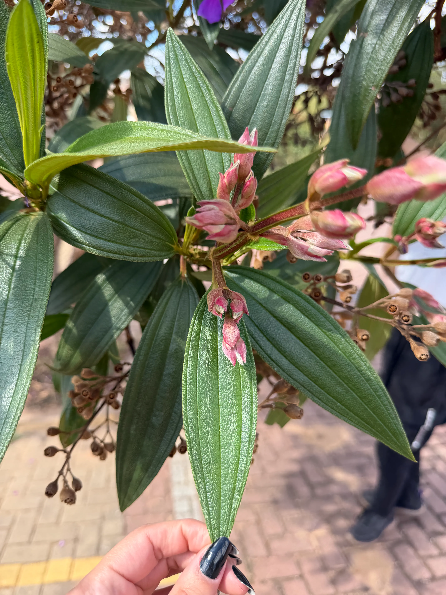
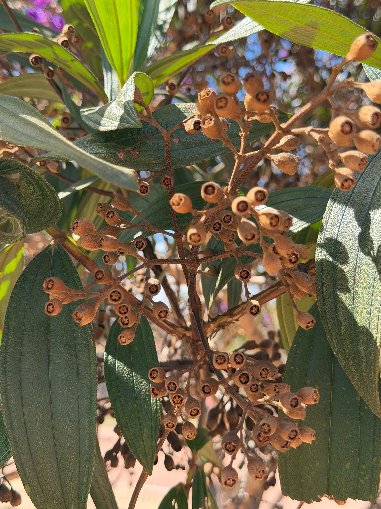
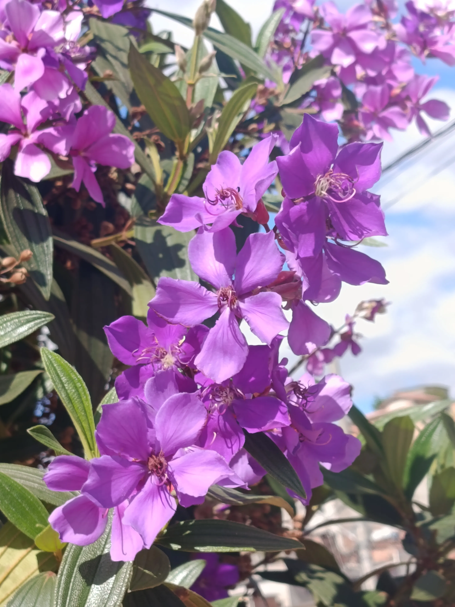
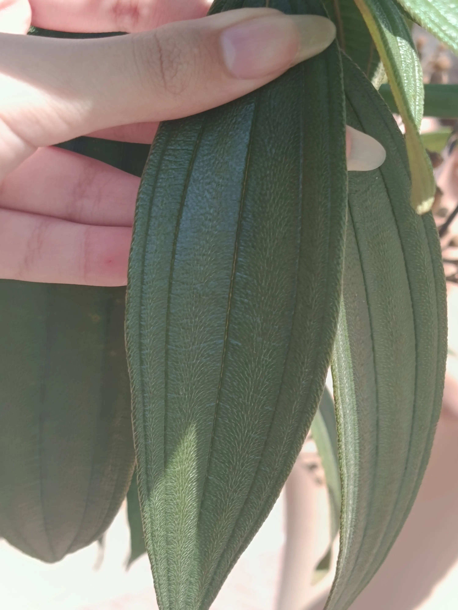

Pleroma sp.
NOMES(s) POPULAR(ES)
Quaresmeira
GÊNERO
Pleroma
FAMÍLIA
Melastomataceae
Nomes populares alternativos.
quaresmeira-roxa, flor-de-quaresma.
Imagens




Origem e distribuição geográfica
Originária da América do Sul, com ocorrência natural registrada no Brasil e na Bolívia. No Brasil, está associada principalmente à região Sudeste e Sul, sendo muito cultivada em jardins, praças e ruas devido à beleza de suas flores.
Status de ocorrência
Nativa do Brasil, associada à Mata Atlântica.
Características
A quaresmeira se destaca por suas flores vistosas, geralmente roxas ou violetas, com cinco pétalas e estames falciformes (curvados, lembrando a forma de uma foice), estruturas responsáveis pela produção do pólen. Suas folhas são simples, formadas por uma única lâmina, e apresentam uma característica marcante: nervuras bem visíveis que partem próximas à base da folha e seguem em direção à ponta, acompanhando a nervura central. As folhas também possuem uma superfície ligeiramente áspera ao toque, devido à presença de pequenos pelos. Seus frutos são pequenas cápsulas secas que, ao amadurecerem, se abrem para liberar numerosas sementes.
Curiosidades
Você sabia que o nome quaresmeira está relacionado à Quaresma, período do calendário cristão que antecede a Páscoa? Isso acontece porque uma de suas épocas de floração coincide frequentemente com esse período do ano.
Outra curiosidade é que suas flores são visitadas por abelhas capazes de realizar a chamada polinização por vibração: ao vibrarem os músculos do tórax, elas ajudam a liberar o pólen armazenado nas anteras, estruturas presentes nos estames.
Localização no
Campus
PRÓXIMO À
Sem informações.
COORDENADA
Sem informações.